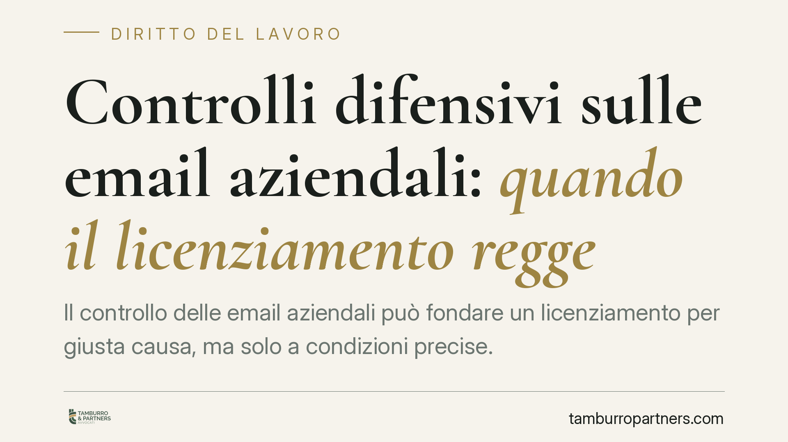

Controlli difensivi sulle email aziendali: quando il licenziamento regge
Il controllo delle email aziendali può fondare un licenziamento per giusta causa, ma solo a condizioni precise. Una recente pronuncia del Tribunale di Pisa conferma che i controlli difensivi sono legittimi quando partono da indizi concreti di illecito, restano circoscritti nel tempo e sono preceduti da una corretta informativa privacy. Per i datori di lavoro cambia poco sul principio, molto sul metodo probatorio.

Il caso
Una lavoratrice addetta alla fatturazione viene licenziata per giusta causa dopo che il datore di lavoro, insospettito da anomalie, esamina la sua corrispondenza aziendale e ne ricava la prova di un conflitto di interessi con un fornitore. La dipendente impugna il recesso contestando l'illegittimità del controllo. Il Tribunale di Pisa, con recente pronuncia, respinge l'impugnazione e conferma il licenziamento, ritenendo le modalità di controllo conformi alla disciplina vigente.
Il punto non è se il datore possa leggere le email dei dipendenti, ma *come* e *quando* può farlo senza che la prova acquisita diventi inutilizzabile.
Inquadramento normativo
L'art. 4 della Legge 300/1970 (Statuto dei lavoratori) disciplina i controlli a distanza sull'attività dei dipendenti. La regola generale subordina l'uso di strumenti di controllo ad accordo sindacale o autorizzazione amministrativa, con l'eccezione degli strumenti di lavoro: email e computer aziendali rientrano in questa categoria e possono essere utilizzati anche a fini disciplinari, purché il lavoratore abbia ricevuto adeguata informativa sulle modalità d'uso e di controllo (comma 3).
Accanto a questa disciplina si colloca la figura dei cosiddetti controlli difensivi in senso stretto: quelli diretti ad accertare condotte illecite del lavoratore già sospettate, non a monitorarne genericamente la prestazione. La Cassazione (sez. lav., n. 25732/2021, e pronunce successive) ha chiarito che tali controlli restano legittimi al di fuori delle garanzie procedurali dell'art. 4 solo se attivati *dopo* l'insorgere di un fondato sospetto e circoscritti alla verifica di quel sospetto. Sul piano sostanziale, la condotta contestata viola l'art. 2105 del codice civile, che impone al lavoratore l'obbligo di fedeltà e gli vieta di curare interessi in conflitto con quelli del datore.
Le tre condizioni congiunte
Dalla pronuncia emerge che il controllo difensivo regge solo se ricorrono, insieme, tre presupposti:
- Indizi concreti: il controllo deve seguire, e non precedere, un sospetto fondato su elementi oggettivi. Non è ammesso il monitoraggio esplorativo o preventivo, cioè svolto "a strascico" per vedere se emerge qualcosa.
- Limite temporale: l'esame può riguardare solo la corrispondenza successiva al momento in cui è sorto il sospetto. Risalire indietro nel tempo per ricostruire l'intera attività del dipendente travalica la finalità difensiva.
- Informativa privacy: il lavoratore deve essere stato informato in via preventiva delle modalità d'uso degli strumenti aziendali e della possibilità di controlli, in coerenza con l'art. 4 St. lav. e con la normativa in materia di protezione dei dati.
Mancando anche una sola di queste condizioni, la prova rischia di essere dichiarata inutilizzabile e il licenziamento che su di essa si fonda può cadere.
Implicazioni pratiche
Per il datore di lavoro la pronuncia non amplia i poteri di controllo: li conferma entro un perimetro rigoroso. La differenza tra un licenziamento confermato e uno annullato spesso non sta nella gravità della condotta, ma nella correttezza del percorso con cui la prova è stata raccolta. Un controllo avviato prima del sospetto, o esteso ad anni di corrispondenza, produce materiale probatorio fragile.
Per il lavoratore, la tutela non è assoluta: l'uso di email aziendali per finalità estranee o in conflitto con l'azienda espone a conseguenze disciplinari quando il datore abbia agito nel rispetto delle condizioni sopra indicate. L'informativa ricevuta al momento dell'assunzione o dell'adozione delle policy diventa un elemento decisivo.
Cosa fare in concreto
- Adotta una policy scritta sull'uso degli strumenti aziendali (email, PC, dispositivi) e consegnala al dipendente con prova della ricezione: è il presupposto dell'informativa richiesta dall'art. 4.
- Documenta il sospetto prima di controllare: annota gli indizi concreti e la data in cui sono emersi, così da dimostrare che il controllo è successivo e mirato.
- Circoscrivi l'indagine alla corrispondenza posteriore al sospetto e alle comunicazioni pertinenti alla condotta contestata, evitando esami generalizzati.
- Coinvolgi un consulente prima di avviare il controllo e prima di contestare l'addebito: un errore procedurale compromette l'intera prova.
- Conserva la catena documentale (policy, informativa, verbali, log di accesso) per poterla produrre in giudizio in modo ordinato.
Ogni storia di lavoro ha i suoi tempi.
Se gestisci HR e vuoi un confronto su contenzioso, ispezioni o licenziamenti, scrivi allo studio. Ti rispondiamo entro un giorno lavorativo.